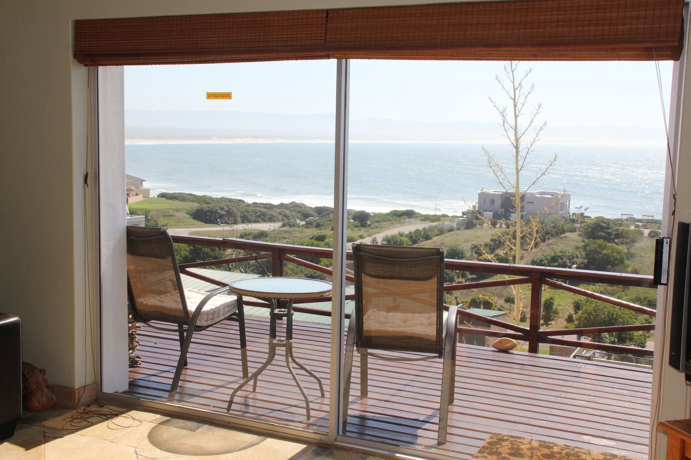
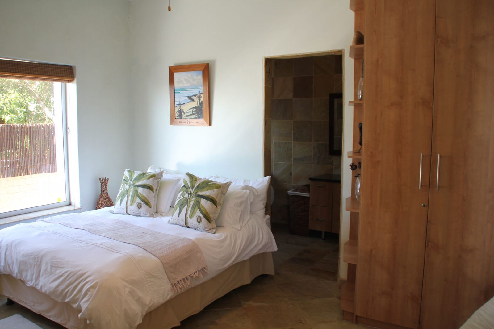
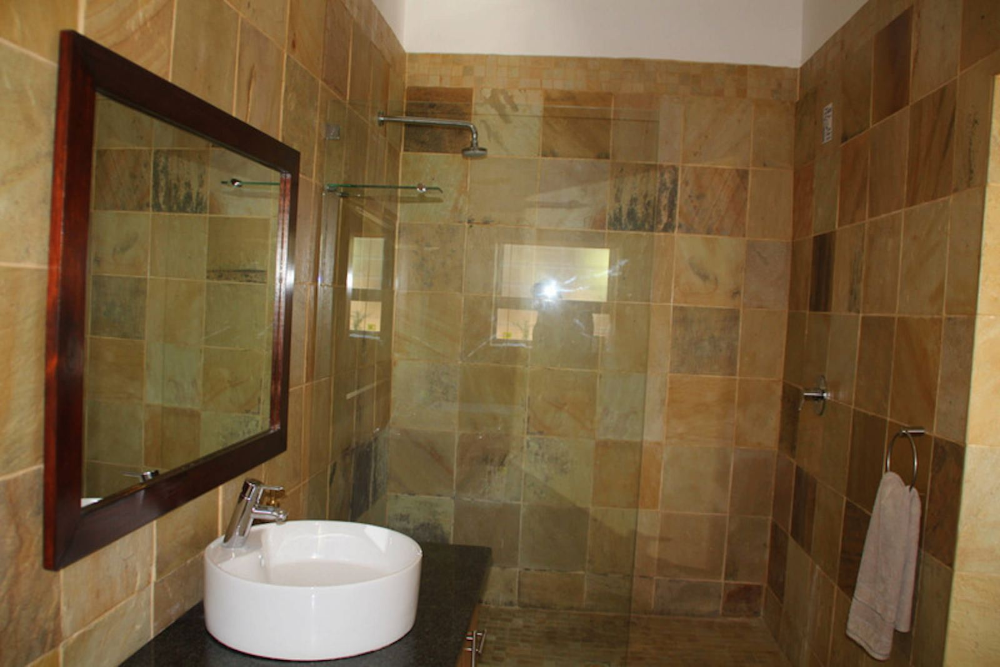

Tubes · the luxury front flat
from R1,200 per night · to R1,800 by season and guests TBC
"Tubes: going nowhere fast, unless you hit a bit of luck and make it to the Point." — Bruce Gold
- Beach and wave views from every room, even the showers
- Timber deck off the lounge; the view runs from Boneyards to Albatross, the whole sweep of breaks
- Fully equipped kitchen, also with the view
- Private garden and braai below the deck
- Large smart TV and Wi-Fi. No DSTV, but an HDMI cable for Netflix from your laptop
4,400 people already follow the house.
News and photos from the house, straight from the Facebook page. 90% of Facebook reviewers recommend JBay Surf View, and it picked up a Traveller Review Award in 2023.